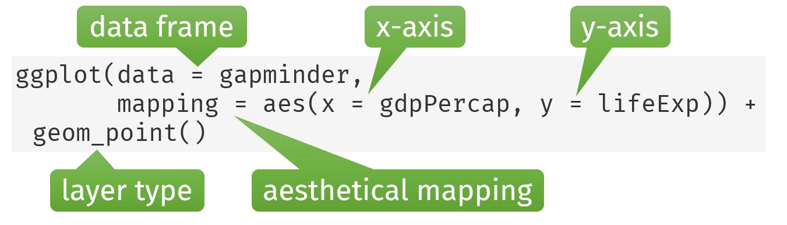

In R, most datasets come in the form of data frames:
Each row is an observation.
Each column is a variable.
Example: The gapminder dataset, containing global health and economic data for 142 countries between 1952 and 2007 in increments of 5 years.
gapminder
# A tibble: 1,704 × 6
country continent year lifeExp pop gdpPercap
<fct> <fct> <int> <dbl> <int> <dbl>
1 Afghanistan Asia 1952 28.8 8425333 779.
2 Afghanistan Asia 1957 30.3 9240934 821.
3 Afghanistan Asia 1962 32.0 10267083 853.
4 Afghanistan Asia 1967 34.0 11537966 836.
5 Afghanistan Asia 1972 36.1 13079460 740.
6 Afghanistan Asia 1977 38.4 14880372 786.
7 Afghanistan Asia 1982 39.9 12881816 978.
8 Afghanistan Asia 1987 40.8 13867957 852.
9 Afghanistan Asia 1992 41.7 16317921 649.
10 Afghanistan Asia 1997 41.8 22227415 635.
# ℹ 1,694 more rows
Example: USA in 2007
# A tibble: 1 × 6
country continent year lifeExp pop gdpPercap
<fct> <fct> <int> <dbl> <int> <dbl>
1 United States Americas 2007 78.2 301139947 42952.
Visualization example: life expectancy vs. GDP
Exploratory data analysis:
How would you describe the relationship between life expectancy and GDP per capita in 1952?
What other variables could have an influence on the shown trend?
Which is the country with moderate life expectancy but extremely high GDP?
In general: the higher the GDP, the higher the life expectancy. However, other factors might explain the variation across the countries: lifestyle, e.g. tobacco and alcohol consumption, lack of exercising, healthcare system. It is difficult to see the trend because of the outlier.
In the mid-twentieth century, Kuwait experienced a period of prosperity called “Golden era” of Kuwait in which the country became the largest oil exporter in the Persian Gulf region by 1952. The visualization helps us to understand our data better and to raise new questions.
ggplot2
ggplot2 is a package for data visualization and part of the tidyverse.
data: the actual data that is plotted as tidy data frame
aesthetics/mapping: map variables to visual properties
x- and y-coordinates, color, shapes, transparency, line type
geoms - geometric objects
points, bars, lines, histograms, etc.
stats - data transformations (often implicit)
counts of categories for bar charts, summary statistics for a boxplot, regression parameters, etc.
scales - translate between variable ranges and visual properties
which color should represent which category?, should the y-axis be log-transformed?
facets - spread data onto multiple subplots/panels
coordinates - change and adjust the coordinate system
cartesian, polar or cartographic coordinate system
themes - additional visual settings not related to the data
font size or background color
First ggplot2 visualization
library(ggplot2) # for plottinglibrary(dplyr) # for data manipulationlibrary(gapminder) # contains the datasetggplot(data =filter(gapminder, year ==1952), mapping =aes(x = lifeExp, y = gdpPercap)) +geom_point() +labs(x ="Life expectancy (years)",y ="GDP per capita (USD)",title ="Relationship between life expectancy and GDP in 1952" )
Questions:
Which data subset is being plotted?
What does each part of the code do?
Which variables map to which aesthetical features of the plot?
ggplot2 basics
The first step in creating a ggplot2 graph is to define a ggplot object with the ggplot() function. The main arguments are:
data: the data frame associated with the graph
mapping: the aesthetical mapping, i.e., which variables from the data will be mapped to the x- or y-position, color, shape, transparency, etc.
After initializing the graph, we continuously stack layers on top of (like LEGO blocks) with the + operator.

For example, we would like to create a graph from the Gapminder data, showing gdpPercap and lifeExp as scatterplot geometry.
ggplot(data = gapminder,mapping =aes(x = gdpPercap, y = lifeExp)) +geom_point()
Step by step
Step 1
ggplot(data = gapminder)
Step 2
ggplot(data = gapminder, mapping =aes(x = gdpPercap, y = lifeExp))
Step 3a
ggplot(data = gapminder, mapping =aes(x = gdpPercap, y = lifeExp)) +geom_point() # adds a scatterplot layer
Step 3b
ggplot(data = gapminder, mapping =aes(x = gdpPercap, y = lifeExp)) +geom_smooth(method ="lm") # adds a trend line (lm = linear regression fit)
Step 4
# Add both scatterplot layer and trend line layerggplot(data = gapminder, mapping =aes(x = gdpPercap, y = lifeExp)) +geom_point() +geom_smooth(method ="lm")
Setting layer arguments
Layer arguments that are independent from the underlying data frame are set outside of aes().
For example, we can make some cosmetic adjustments by setting the points’ color and transparency (alpha), the line’s color and size. Further, we remove the confidence interval (se) of the linear regression fit.
ggplot(data = gapminder, mapping =aes(x = gdpPercap, y = lifeExp)) +geom_point(alpha =0.3, color ="cornflowerblue") +geom_smooth(method ="lm", color ="firebrick", se =FALSE, linewidth =2) +scale_x_log10()
Axis scales
ggplot(gapminder, aes(x = gdpPercap, y = lifeExp)) +geom_point()
The x- and y-axis scales default to scale_x_continuous() and scale_y_continuous(), respectively. We do not need to explicitly add these layers to the graph.
ggplot(gapminder, aes(x = gdpPercap, y = lifeExp)) +geom_point() +scale_x_continuous()
Let us change the x-axis range to lie between 200 and 50,000:
Note that we receive a warning. There are 6 observations that are outside the specified x-axis range.
Since the graph reveals a log relationship between GDP per capita and life expectancy, we may improve it by log-transforming the x-axis.
ggplot(gapminder, aes(x = gdpPercap, y = lifeExp)) +geom_point() +scale_x_log10()
The x-axis labels in scientific location don’t look particularly pretty.
We would like to make the following changes:
make the x-axis labels more intuitive
set custom axis breaks at 500, 5,000 and 50,000
ggplot(gapminder, aes(x = gdpPercap, y = lifeExp)) +geom_point() +scale_x_log10(breaks =c(500, 5000, 50000), # ticks pos.labels = scales::label_number(big.mark =",") # use commas to separate thousands )
Color scales
Similarly to the axis scales, we do not need to explicitly add a color scale layer to the graph. For continuous columns, scale_color_continuous() / scale_fill_continuous() are used. For discrete columns, scale_color_discrete() / scale_fill_discrete() are used.
ggplot(gapminder, aes(x = continent, fill = continent)) +geom_bar()
We can replace the default color scale by adding a different scale_fill_* layer. Here, we use the palette "Accent" from ColorBrewer.
ggplot(gapminder, aes(x = continent, fill = continent)) +geom_bar() +scale_fill_brewer(palette ="Accent")
Facetting
One of the highlights of ggplot2 is the possibility to easily facet a plot, i.e. splitting the data onto multiple panels. Faceting allows to compactly present a lot of information by stratifying by a third variable. Also, faceting often is a remedy against overplotting.
The facet_wrap() function creates subpanels.
Notation: ~(tilde) comma-separated names of variables